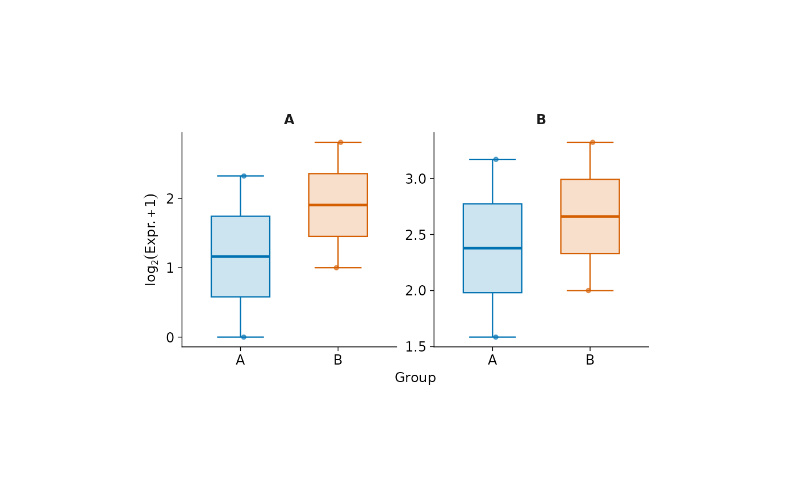
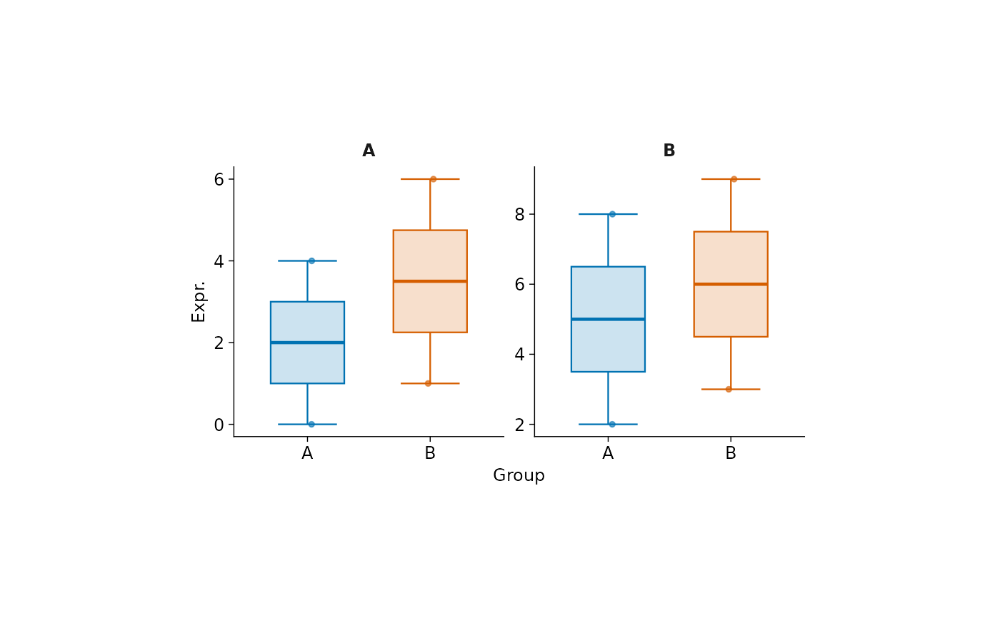
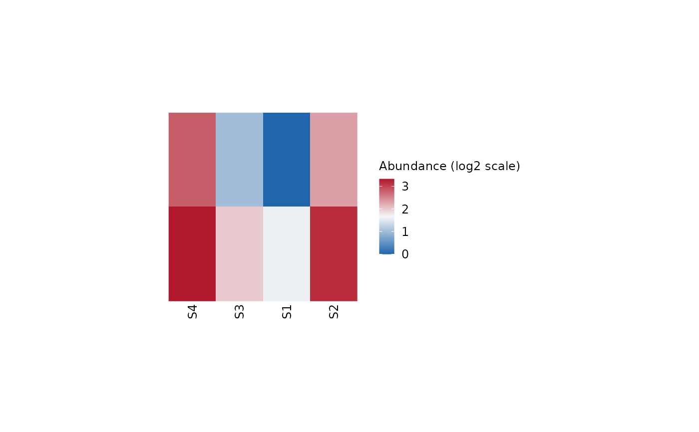

Abundance scales in boxplots and heatmaps
glyvis_abundance_scale.RdAbundance scales in boxplots and heatmaps
Arguments
- log_transform
NULL(default) uses recorded abundance scale metadata: raw values are transformed withlog2(x + 1), while already logged values are unchanged.FALSEalways uses the supplied values unchanged.TRUErequests the same transformation for raw values, but warns and is ignored for already logged values. This argument must be named after....
Details
plot_boxplot(), plot_heatmap(), and the experiment-container
autoplot.glyexp_experiment() methods read S4Vectors::metadata(x)$scale
for SummarizedExperiment inputs or x$meta_data$scale for legacy
glyexp_experiment inputs. Supported scales are "raw", "log" (natural
logarithm), "log2", "log10", and "logx" (logged coordinates without
a known ordinary-log base, including centered log-ratios). Missing scale
metadata is treated as "raw" for compatibility with older objects.
An explicitly present invalid scale, including NULL, is an error.
The scale is never inferred from numeric values or other metadata.
Already logged values retain their recorded scale, even with negative or
zero coordinates. No base conversion or recovery of original abundances is
attempted. Labels describe the operation actually applied or the recorded
input scale; FALSE does not relabel raw input as logged. Inputs and their
metadata are never modified.
Heatmap scale independently controls row/column standardization, and
boxplot scales controls facet axes. Heatmap filtering and clustering use
the selected values before optional standardization. Standardized heatmaps
use a Z-score legend; unstandardized heatmaps show the abundance scale.
This selection follows the scale-aware log_transform convention in
glystats, but preserves glyvis's historical log2(x + 1) formula for raw
values. The fixed pseudocount and its effect on small abundances are
unchanged. Plots of statistical results do not transform their inputs again.
For container plots that run a glystats analysis (for example,
plot_pca()), set analysis options through stats_args, such as
stats_args = list(log_transform = FALSE).
Examples
values <- matrix(c(0, 2, 4, 8, 1, 3, 6, 9), nrow = 2,
dimnames = list(c("A", "B"), paste0("S", 1:4)))
exp <- SummarizedExperiment::SummarizedExperiment(
assays = list(abundance = values),
colData = S4Vectors::DataFrame(group = c("A", "A", "B", "B")),
metadata = list(scale = "raw")
)
plot_boxplot(exp) # log2(x + 1)

plot_boxplot(exp, log_transform = FALSE) # unchanged raw values

SummarizedExperiment::assay(exp) <- log2(values + 1)
S4Vectors::metadata(exp)$scale <- "log2"
plot_heatmap(exp, scale = "none") # no second logarithm
